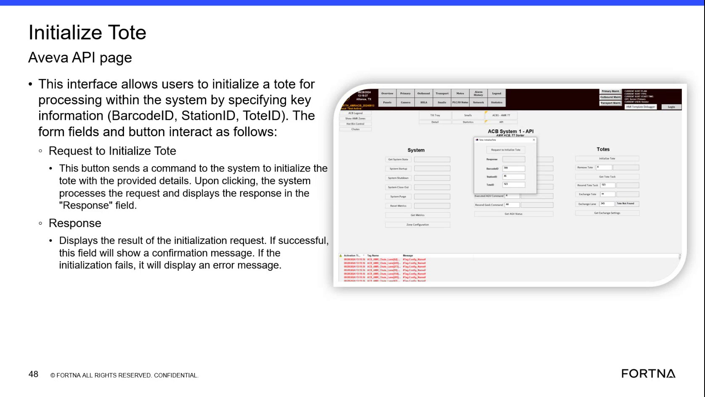

| Procedure ID | proc_initialize_tote_aveva_api_request_response_v1 |
|---|---|
| Title | Initialize a Tote Using the Aveva API “Initialize Tote” Page (Request + Response Check) |
| Procedure Type | operation |
| Primary Role | operator |
| Support Safe | Yes |
| Capability Tags | tote_lifecycle_state |
| Access Surface | aveva_hmi |
| Audience Roles | operator |
| Failure Pattern Tags | None |
| Validation Status | needs_sme_review |
| Merge Status | source_finalized |
Use the AVEVA HMI “Initialize Tote” API page to submit a tote initialization request by entering BarcodeID/Code ID, StationID, and ToteID, then confirm the outcome via the on-screen Response field (confirmation on success; error/tote status on failure).
When you need to initialize a tote for processing in the system using the AVEVA HMI “Initialize Tote” API page, and you want to verify success or capture the failure reason shown in the Response field.

Responsible role: operator
Instruction:
On the AVEVA HMI, open the page labeled “Initialize Tote” (Aveva API page).
Expected result:
The “Initialize Tote” page is displayed with fields for BarcodeID/Code ID, StationID, ToteID, a button labeled “Request to Initialize Tote”, and a “Response” field.
Responsible role: operator
Instruction:
In the BarcodeID field, enter the tote barcode value. The source states BarcodeID and Code ID use the same number.
Expected result:
BarcodeID field contains the intended tote barcode value (same number as Code ID).
Responsible role: operator
Instruction:
In the StationID field, enter the station ID for the rack station (the source notes StationID corresponds to station IDs shown in RMS).
Expected result:
StationID field contains the intended rack station ID.
Responsible role: operator
Instruction:
In the ToteID field, enter the tote ID.
Expected result:
ToteID field contains the intended tote ID.
Responsible role: operator
Instruction:
Click the button labeled “Request to Initialize Tote”.
Expected result:
The system processes the request and updates the “Response” field with the result.
Responsible role: operator
Instruction:
After the request completes, observe the “Response” field and confirm whether it shows a confirmation message (success) or an error message / tote status (failure).
Expected result:
The “Response” field displays either: (1) a confirmation message indicating the tote was initialized successfully, or (2) an error message / tote status explaining why initialization failed.
Stop or Escalate If:
Responsible role: operator
Instruction:
If Response indicates the tote cannot be initialized, check whether the displayed text matches the known contexts: totes on an AGV may be rejected; failures may indicate AGVs not in the system or AGVs that have been removed, and the response may include a tote status explaining why initialization failed.
Expected result:
You can identify the reason from the displayed error/tote status text (e.g., AGV-related rejection, AGV not in system, or AGV removed).
Stop or Escalate If: